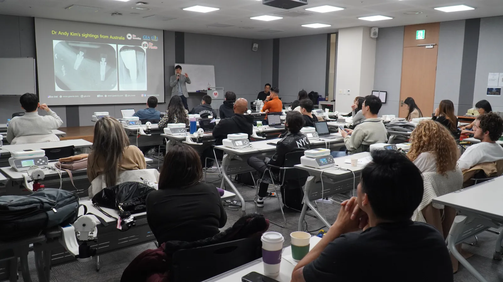

Meet the Doctor
Introducing Dr. GiTae Kwon, DDS MSc
Implant surgeon, teacher of implant surgery, and a dentist his patients describe as calm, careful and honest. He plans every case with the same care he teaches other dentists to use.

His Story
Perfectionism, With a Good Bedside Manner
Dr. Kwon was born in South Korea and raised in New Jersey. Colleagues know him for an almost restless passion for dentistry and a perfectionist streak in his treatment. Patients know him for something simpler: he takes the time to explain what he sees, what he recommends, and why.
His work centers on dental implant surgery, smile makeovers, full-mouth reconstruction and All-on-X treatment, alongside general and aesthetic dentistry for the whole family. He uses modern equipment because it makes the work more precise, and he gives every case, in his team's words, two hundred percent.
The practice's promise is his own: Built on Trust. Dentistry & Implants, Built to Last. In his words, exceptional dentistry begins with trust. Through sincere care, modern technology and a commitment to perfection, the goal is healthier, more confident smiles for years to come.
Training and Credentials
Trained at NYU, Advanced in Rome
- New York UniversityGraduated summa cum laude.
- NYU College of DentistryDoctor of Dental Surgery (DDS). Honored with the Outstanding Achievement in Operative Dentistry award from the Academy of Operative Dentistry in his graduating class.
- 2023, RomeMaster's degree in Dental Implantology and Advanced Surgical Extractions, University of Camillus, Rome, Italy.
- Visiting ProfessorUniversity of Camillus, Rome, Italy.
- Implant FacultyPart-time faculty at the Gangnam International Implant Academy (GIIA), teaching dental implant surgery and wisdom tooth extraction to fellow dentists, and faculty for a dental implant company.
- LecturerGives dental implant lectures across North and Central America, including a live surgery seminar held ten times a year in Tijuana, Mexico.
- AuthorHas published dental implant books with his mentor, Dr. Youngsam Kim.
Beyond the Practice
A Dentist Other Dentists Learn From
Dr. Kwon spends part of his year teaching. That work keeps his own technique current, and it means the methods he teaches are the same ones he uses on his own patients.

How He Works
What to Expect in His Chair
A conversation first
You tell him what is bothering you and what you want. He listens before he looks.
An honest exam
He examines your teeth and gums, takes the imaging he needs, and shows you what he finds.
Options, explained plainly
You hear every reasonable option, including the simplest one, and what each involves in time and cost.
Work built to last
Treatment is planned carefully and done carefully, with follow-up visits to make sure it holds.
Off the Clock
Soccer, Study, and a Long Friendship
When he is not seeing patients, Dr. Kwon is studying the newest techniques or playing soccer. He and Dr. Byungchul Park have played together since 2013, in the evening leagues at Chelsea Piers in Stamford.